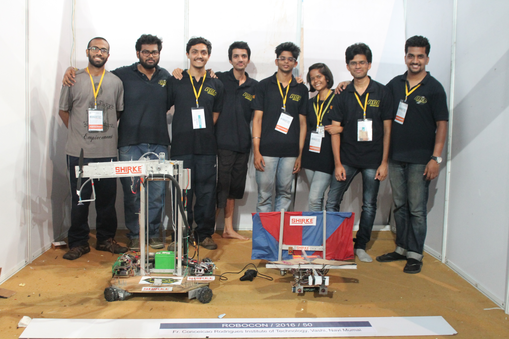

ABU Robocon Projects
International Robotics Competition

About ABU Robocon
ABU Robocon (Asia-Pacific Robot Contest) is an international robotics competition where teams design and build robots to complete challenging tasks. I participated in three consecutive years (2014, 2015, 2016) representing FCRIT (Fr. Conceicao Rodrigues Institute of Technology), developing autonomous and manual robots for various challenges.
Robocon 2014 - Parenthood

Challenge: Two robots (parent and child) had to work together to complete the game tasks. This required precise coordination between autonomous and manual control systems.
Videos
Agnel Robocon Team 2014 Promo
Practice Session 01
Practice Session 02
Practice Session 03
Robocon 2015 - Robominton

Challenge: Two badminton-playing robots with service delivery capability played against two other team robots in a badminton doubles match. This required sophisticated motion control and ball tracking systems.
Robocon 2016 - Clean Energy

Challenge: An autonomous and a manual robot had to traverse terrain representing rivers and mountains, and hoist a wind turbine on a windmill. The manual robot could only push the autonomous robot using clean energy (wind). The autonomous robot followed white lines on multi-colored surfaces.
Competition Videos
FCRIT vs Dhole Patil College (Super League Match 1)
FCRIT vs IIT Kanpur (Super League Match 2 - Game 1)
FCRIT vs IIT Kanpur (Super League Match 2 - Game 2)
FCRIT vs Manipal Institute (League Match 2)
FCRIT vs SSBT's COET Jalgaon (League Match 1)